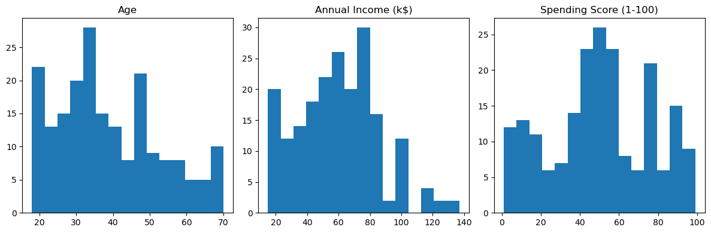
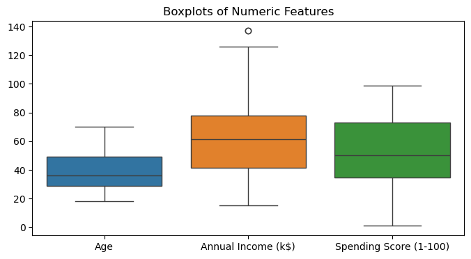
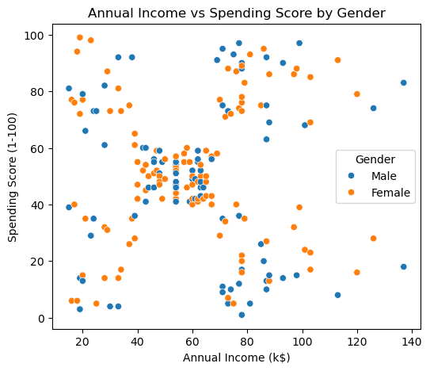
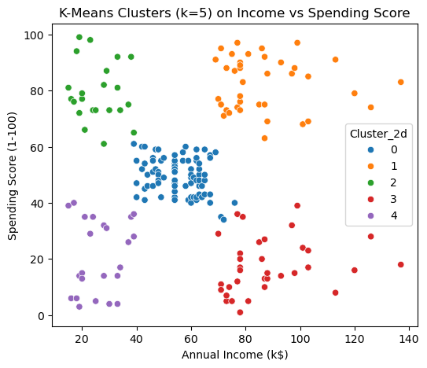
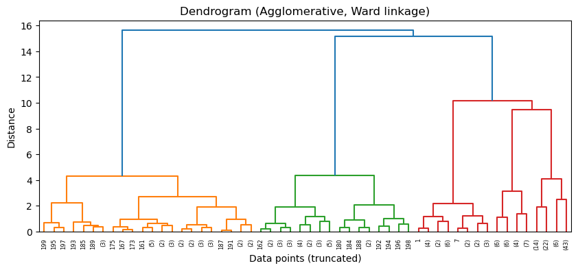

Goal: use clustering (K-Means + Agglomerative) to group mall customers by income and spending behavior, then interpret
the segments for marketing strategy and ethical impact.
Story: Finding Natural Customer Segments
The mall wants more targeted marketing instead of blasting the same deals to everyone. All they have is simple
customer data: gender, age, annual income, and a spending score from 1–100.
Rather than pre-define labels like “VIP” or “budget,” I used unsupervised clustering to let the data form its own groups
and then translated those clusters into business language.
Problem
The core question: do distinct segments of customers exist based on income and spending score, and what do they
look like? In particular:
Can we find high-income, low-spending customers who might be disengaged?
Can we find lower-income but loyal, high-spending shoppers?
How do these groups differ enough to justify different marketing strategies?
Data
The dataset contains 200 customers with 5 columns:
CustomerID — unique identifier (dropped for modeling).
Gender — Male / Female.
Age — customer age in years.
Annual Income (k$) — estimated yearly income in thousands.
Spending Score (1-100) — mall-assigned score based on spending and loyalty.
It’s a small but clean dataset, which makes it good for visually understanding clustering behavior.
Exploring the Data

Histograms show multi-peaked age distribution, a wide spread of income, and two broad groups of low vs high spenders.

Boxplots confirm moderate spread and a few high-income outliers near 130k.

Income vs Spending Score by gender. The two genders mix across the space—behavior is driven more by money and spending than by gender.
Visually, the income–spending plot already hints at several blobs: a dense mid-income, mid-spend group, high-income
low-spend customers, and clear high-spend pockets at different income levels. That’s exactly what clustering should formalize.
Clustering Results (K-Means, k = 5)

K-Means with five clusters on scaled Annual Income and Spending Score. Each color is a discovered segment.
I ran K-Means for k = 2–10, checked inertia and silhouette scores, and visually inspected the clusters.
k ≈ 4–5 looked reasonable; I chose k = 5 because it separated a “middle” group while keeping interpretable segments.
Cluster centers (back on original scale)
Cluster
Annual Income (k$)
Spending Score
Interpretation
0
≈ 55
≈ 50
Average income, average spending — core “middle” customers.
1
≈ 87
≈ 82
High income, high spending — premium loyalists.
2
≈ 26
≈ 79
Lower income, high spending — value-driven loyal shoppers.
3
≈ 88
≈ 17
High income, low spending — affluent but disengaged.
4
≈ 26
≈ 21
Low income, low spending — occasional visitors.
These segments line up with what a marketing team actually cares about: who is worth retaining, who is worth
re-engaging, and who mostly passes through.
Key Takeaways
Clustering cleanly separated loyal high-spenders from under-utilized high-income customers.
A low-income but high-spending segment shows that “budget” customers can still be very valuable.
Gender wasn’t a major driver; the important factors were income and spending score.
Cluster labels come from , not the algorithm. You still have to translate centroids into real business language.
Impact & Reflection
This project shows how simple numeric features can support reasonable segmentation and better targeting of
loyalty programs, promotions, and retention efforts. But it also highlights risks: over-focusing on high-income
groups or high spenders can sideline low-income customers, and segments can easily slide into profiling if tied
to sensitive attributes. Responsible use means regularly checking how segments are used and making sure baseline
access and treatment stay fair across customers.
Technical Report (Process & Reflection)
Dataset origin & description
Source:
Mall Customer Segmentation Data (Kaggle)
.
The data contains 200 mall customers with demographic and behavioral attributes. There is no label or target
column; the point of the project is unsupervised clustering.
Preprocessing
DroppedCustomerID since it's just an identifier with no numeric meaning.
EncodedGender as a binary variable (0/1) to keep the feature numeric.
Built two feature views:
[Annual Income, Spending Score] for 2D visualization and cluster storytelling.
[Gender, Age, Annual Income, Spending Score] for a fuller behavioral view.
Scaled all numeric features with StandardScaler so K-Means and Agglomerative
clustering use distances that aren’t dominated by income’s larger numeric range.
Checked for missing values; this dataset is already clean, so no imputation was needed.
Clustering Experiments
Exp 1 — K-Means on Income + Spending Score (2D):
I ran K-Means for k = 2–10 on standardized [Annual Income, Spending Score].
I used inertia (elbow) and silhouette scores to pick a reasonable range and then inspected the actual plots.
k = 5 gave clean, interpretable blobs that matched visible structure in the scatterplot. This is the main model
used for storytelling.
Exp 2 — K-Means on Full Feature Set:
Next, I extended K-Means to [Gender, Age, Annual Income, Spending Score].
This didn’t completely reshape the segments, but it did nudge cluster centers and slightly separate some age bands
(e.g., younger high-spenders vs older moderate-spenders). The main story still revolved around income and score.
Exp 3 — Agglomerative Clustering + Dendrogram:
To cross-check K-Means, I ran Agglomerative clustering with Ward linkage on the same 2D scaled features and plotted a dendrogram.

Dendrogram shows a few large merges before distance jumps, supporting 4–5 high-level clusters.
The tree structure also suggested roughly 4–5 meaningful groups before distances spike, aligning with the choice of k = 5.
Comparing K-Means labels to Agglomerative labels showed similar groupings with minor boundary changes.
Impact & Limitations
Clustering here is basic but practical: it tells the mall who is loyal, who has money but isn’t spending, and who is
mostly occasional traffic. That helps allocate marketing budget and design targeted campaigns.
The limitations are clear:
No real purchase history (only an abstract “spending score”).
No information on visit frequency, channel, or categories purchased.
Risk of treating some groups as “less important” just because they don’t spend as much.
In a real deployment, this kind of segmentation should be monitored so it doesn’t quietly justify ignoring low-income
customers or pushing aggressive upselling only to high-income groups.